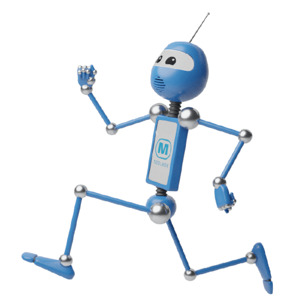
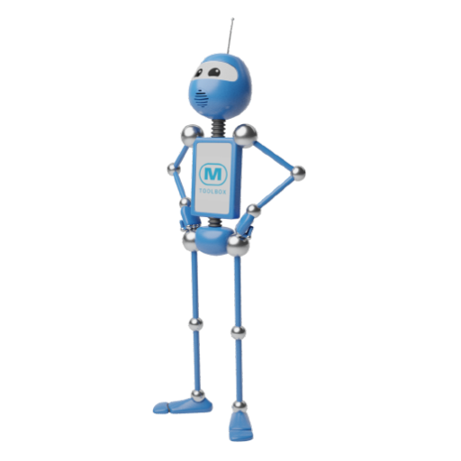

La sostenibilidad industrial empieza con una firma.
Cómo nuestra forma de trabajar convierte el trabajo de campo en evidencia verificable.
No venimos a vender un sistema. Venimos a mostrar una forma de trabajar.
Somos una empresa uruguaya. Convertimos procesos industriales de papel en flujos digitales firmados, con hora, técnico y trazabilidad completa.
Desarrollo Industrial Inclusivo y Sostenible.
Lo que no se puede trazar, no se puede verificar. Lo que no se verifica, no cuenta.
Las PyMEs que sus programas quieren ayudar a transicionar siguen trabajando en papel. Cada planilla manual es un dato que se pierde, una hora que se transcribe dos veces, un cierre que nadie puede auditar.
cambio de filtro
turno tarde
La capa de datos
que faltaba.
XPRNZ no es una app de servicio técnico. Es el motor que convierte cada acción de campo en un registro con hora, técnico y firma. Imposible de repetir, posible de auditar.
- 01Ayudamos a las empresas a digitalizar y organizar sus flujos de trabajo.
- 02Ayudamos a gestionar sus datos de clientes, empleados y trabajos.
- 03Así mejora la eficiencia y se optimizan las tareas, ahorrando tiempo.
Una empresa con raíces en tres países y los pies en Uruguay.
Operamos en
- Países Bajos 2018
- Bélgica 2023
- Uruguay 2025
Industrias actuales
- Climatización
- Calefacción central
- Norma de CO
- Ventilación
- Tratamiento de agua
Industrias en expansión
- Frigoríficos
- Agroindustria
- Automotriz
- Transporte
- Salud
Dos partes. Un solo dato.
Ambos programas trabajan juntos, con el fin de brindar comodidad a los trabajadores y al personal de oficina.
Oficina · web
Campo · app móvil
De miles de registros a un indicador.
La misma acción firmada, multiplicada y agregada, se vuelve un tablero: tiempos, cumplimiento, intervenciones por planta, por equipo, por período.
- ·Gestión de Datos
- ·Gestión de Empleados
- ·Análisis de Trabajos
Una orden de trabajo. Ocho pestañas. Cada acción, sellada.
De una firma a un sistema de verificación.
Una orden firmada es una evidencia. Mil órdenes firmadas son una cadena de custodia. Cien PyMEs con cadena de custodia son una base de datos auditable para todo un sector.
El mismo registro, sincronizado a tres destinatarios.
Lo que mata el cumplimiento en la PyME es la fricción de reportar. Si el reporte sale del mismo acto de trabajo, la fricción desaparece. La arquitectura es la misma: puede sincronizar al registro MRV o al organismo que el programa designe.

Eliminar la transcripción manual y el reproceso devuelve más de la mitad del tiempo de cierre de una orden.
El mismo motor que traza una orden, traza un circuito circular.
Dónde vive esta clase de capacidad.
Lo que no somos.
Lo que sí somos
- Capa de captura y enrutamiento de dato verificado
- Trazabilidad sellada a nivel empresa
- Rampa de digitalización para PyMEs
- Arquitectura configurable y adaptable por vertical
Lo que no somos
- No medimos por sí solos toneladas, kilovatios ni porcentajes: esos campos se configuran
- No somos un instrumento de política nacional, somos infraestructura habilitante
- No somos un libro mayor de cadena de valor, somos la fuente que podría alimentar un Pasaporte Digital de Producto
- La sincronización al regulador es configurable, no preintegrada con ONUDI
Su lenguaje, nuestra forma de trabajar.

Empezó con una firma. Puede terminar en un sistema.
Una empresa uruguaya que dice "creamos tu futuro", conversando con la oficina que cree que la circularidad es una nueva forma de producir. La misma idea, desde dos lados.